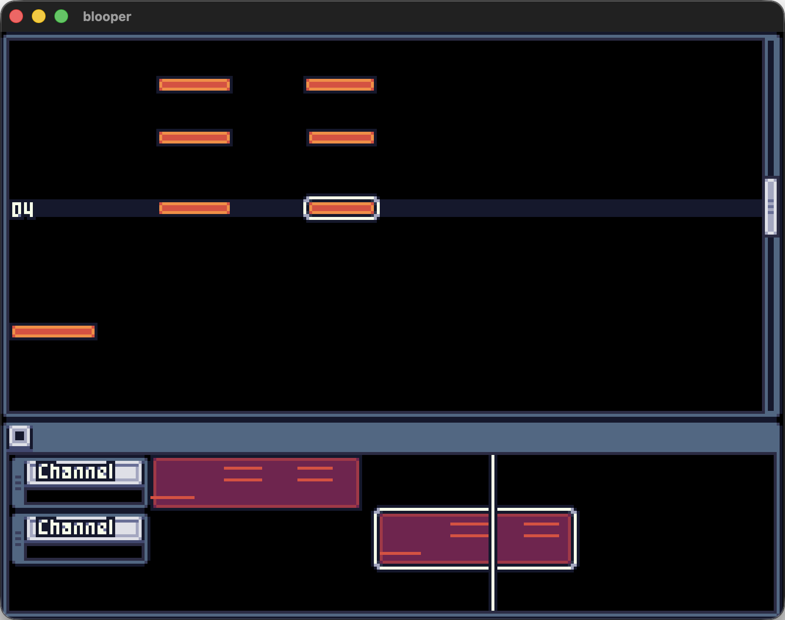

A digital audio workstation and synth designed for chiptune.

Inspired by JummBox, an excellent web-based tool for composing chiptune. Chiptune is a style of music associated with retro video games that primarily uses simple waveforms! I'm quite partial to it.
I was dissatisfied with the fact that the JummBox synth is implemented in JavaScript, and so can't reasonably be embedded in a game. Many games I make use pixel-art textures and chiptune music, so my texture files are tiny and my audio files are, oops, massive! If I could call into a synth, I could store track data instead of audio, and shrink my package sizes by a significant fraction.
I started rewriting the JummBox synth in Rust before switching to writing my own synth, which eventually turned into Blooper.
You can find the source code on GitHub.